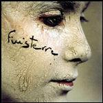

| Artist: | Finisterre |
| Title: | In Ogni Luogo |
| Label: | Sublime Records THX 1138 |
| Length(s): | 50 minutes |
| Year(s) of release: | 1999 |
| Month of review: | [02/2003] |
| 1) | Tempi Moderni | 4.55 |
| 2) | Snaporaz | 6.42 |
| 3) | Ninive | 3.57 |
| 4) | In Ogni Luogo | 3.22 |
| 5) | Coro Elettrico | 7.11 |
| 6) | Le Citta' Indicibili | 3.12 |
| 7) | Agli Amici Sinestetici | 5.22 |
| 8) | Continuita' Dilaraneltempo | 8.29 |
| 9) | Peter's House | 3.50 |
| 10) | Wittgenstein Mon Amour 1-12 | 2.58 |
Ninive closes the more or less instrumental section, for the time being. Guitar with gentle brass. Good stuff.
In Ogni Luogo is a dreamy track (not unlike the others, in that respect) with Lago's laid back, somewhat jazzy vocals. The track is ended with a violin solo.
Coro Elettrico roars off with hefty guitar and violin. As it progresses, a mellotron sounded choir sets in as well. The mid section is a lengthy whirling synth bit, rather sparkling, with great build of tension.
Le Citta' Indicibili is led by violin, and feels almost gypsy. Agli Amici Sinestetici is dominated by guitar, with some bassy sections. This track is a bit too straightforward for my tastes.
Continuita' Dilaraneltempo is the second vocal track. Once again with a somewhat jazzy feel, but mainly prog. Nice build up of tension in the middle section. Probably the best track of the album.
Peter's House is an instrumental which sort of takes through the different atmospheres of the album, a bit of mellotron, guitar, wind, each at their own time.
Wittgenstein Mon Amour 1.12 is a bassoon with guitar track. Nice and atmospherical.